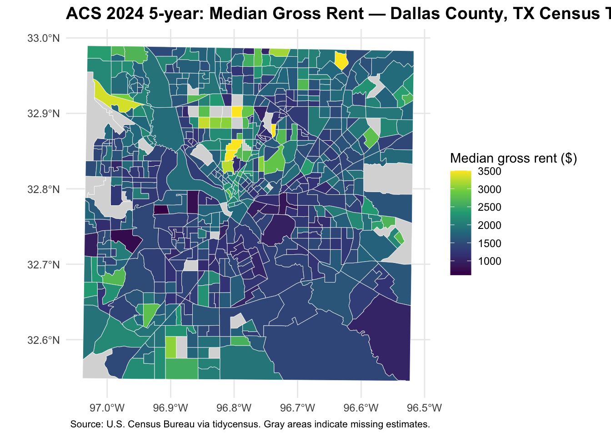

library(tidycensus)
library(tigris)
library(sf)
library(dplyr)
library(ggplot2)
library(readr)
options(tigris_use_cache = TRUE)Assignment 3
ACS via tidycensus
Study Area and Variables
This analysis uses the 2024 ACS 5-year estimates to examine median gross rent and poverty rates across census tracts in Dallas County, Texas. The map displays median gross rent, and the table compares the tracts with the highest and lowest poverty rates.
Median gross rent is measured using B25064_001. The poverty rate is calculated by dividing the number of people below the poverty level (B17001_002) by the population for whom poverty status is determined (B17001_001).
Load Packages and Check Variable Codes
Check the variable codes.
vars <- load_variables(2024, "acs5")
vars |>
dplyr::filter(
name %in% c("B25064_001", "B17001_002", "B17001_001"))# A tibble: 3 × 4
name label concept geography
<chr> <chr> <chr> <chr>
1 B17001_001 Estimate!!Total: Povert… tract
2 B17001_002 Estimate!!Total:!!Income in the past 12 months b… Povert… tract
3 B25064_001 Estimate!!Median gross rent Median… block gr…Retrieve ACS Data
state_abbr <- "TX"
geo_level <- "tract"
county_name <- "Dallas"
my_vars <- c(
rent = "B25064_001",
pov = "B17001_002",
povden = "B17001_001")
year_acs <- 2024
survey <- "acs5"
acs_wide <- get_acs(
geography = geo_level,
variables = my_vars,
state = state_abbr,
county = county_name,
year = year_acs,
survey = survey,
geometry = TRUE,
output = "wide")Getting data from the 2020-2024 5-year ACSacs_wide <- acs_wide |>
mutate(
pov_rate = povE / povdenE,
pov_moe = moe_prop(povE, povdenE, povM, povdenM))Median Gross Rent Map
ggplot(acs_wide) +
geom_sf(aes(fill = rentE), color = "white", linewidth = 0.15) +
scale_fill_viridis_c(
name = "Median gross rent ($)",
na.value = "grey85") +
labs(
title = paste0(
"ACS ", year_acs, " 5-year: Median Gross Rent — ",
county_name, " County, ", state_abbr, " Census Tracts"),
caption = paste(
"Source: U.S. Census Bureau via tidycensus.",
"Gray areas indicate missing estimates.")) +
theme_minimal() +
theme(
plot.title = element_text(size = 14, face = "bold"),
plot.caption = element_text(size = 8),
legend.position = "right")
Median gross rent estimates across Dallas County census tracts ranged from $608 to $3,501, with a median of $1,598. The map shows variation in rent estimates across tracts. Gray areas indicate tracts for which estimates are unavailable, not tracts with $0 rent. Rent estimates are missing for 28 of the 645 tracts.
Tracts with the Highest and Lowest Poverty Rates
The poverty rate is calculated by dividing the number of people below the poverty level by the population for whom poverty status is determined. The table below shows the 10 tracts with the highest estimated poverty rates and the 10 with the lowest. MOE refers to the margin of error. Poverty rate MOEs are reported in percentage points.
top10 <- acs_wide |>
st_drop_geometry() |>
arrange(desc(pov_rate)) |>
select(NAME, pov_rate, pov_moe, povE, povM) |>
slice_head(n = 10) |>
mutate(Ranking = "Highest")
bottom10 <- acs_wide |>
st_drop_geometry() |>
arrange(pov_rate) |>
select(NAME, pov_rate, pov_moe, povE, povM) |>
slice_head(n = 10) |>
mutate(Ranking = "Lowest")
poverty_table <- bind_rows(top10, bottom10) |>
mutate(
`Poverty rate (%)` = round(100 * pov_rate, 1),
`Poverty rate MOE (percentage points)` = round(100 * pov_moe, 1)) |>
select(
Ranking,
Tract = NAME,
`Poverty rate (%)`,
`Poverty rate MOE (percentage points)`,
`People below poverty estimate` = povE,
`Count MOE` = povM)
knitr::kable(
poverty_table,
caption = "Dallas County census tracts with the highest and lowest estimated poverty rates")| Ranking | Tract | Poverty rate (%) | Poverty rate MOE (percentage points) | People below poverty estimate | Count MOE |
|---|---|---|---|---|---|
| Highest | Census Tract 87.01; Dallas County; Texas | 61.8 | 17.2 | 2883 | 1012 |
| Highest | Census Tract 167.06; Dallas County; Texas | 56.0 | 22.0 | 1252 | 626 |
| Highest | Census Tract 108.04; Dallas County; Texas | 52.9 | 18.6 | 2790 | 1214 |
| Highest | Census Tract 93.04; Dallas County; Texas | 51.6 | 14.4 | 4570 | 1566 |
| Highest | Census Tract 9802; Dallas County; Texas | 49.1 | 14.3 | 362 | 170 |
| Highest | Census Tract 108.07; Dallas County; Texas | 47.4 | 25.5 | 1877 | 1169 |
| Highest | Census Tract 210; Dallas County; Texas | 46.9 | 21.4 | 2257 | 1194 |
| Highest | Census Tract 136.29; Dallas County; Texas | 45.9 | 54.4 | 1378 | 1868 |
| Highest | Census Tract 78.30; Dallas County; Texas | 45.4 | 33.5 | 1291 | 1067 |
| Highest | Census Tract 87.04; Dallas County; Texas | 44.8 | 20.9 | 2410 | 1215 |
| Lowest | Census Tract 141.50; Dallas County; Texas | 0.0 | 1.2 | 0 | 15 |
| Lowest | Census Tract 137.15; Dallas County; Texas | 0.1 | 0.3 | 3 | 7 |
| Lowest | Census Tract 141.59; Dallas County; Texas | 0.2 | 0.2 | 6 | 6 |
| Lowest | Census Tract 167.08; Dallas County; Texas | 0.6 | 1.1 | 40 | 74 |
| Lowest | Census Tract 7.03; Dallas County; Texas | 0.6 | 1.0 | 17 | 27 |
| Lowest | Census Tract 80; Dallas County; Texas | 0.8 | 0.9 | 57 | 69 |
| Lowest | Census Tract 190.23; Dallas County; Texas | 1.0 | 1.2 | 51 | 67 |
| Lowest | Census Tract 82; Dallas County; Texas | 1.0 | 1.1 | 43 | 50 |
| Lowest | Census Tract 122.13; Dallas County; Texas | 1.1 | 1.3 | 22 | 27 |
| Lowest | Census Tract 76.04; Dallas County; Texas | 1.1 | 1.4 | 32 | 42 |
Census Tract 87.01 had the highest estimated poverty rate, at 61.8%, with an MOE of 17.2 percentage points. The next-highest estimate was for Census Tract 167.06, at 56.0%, with an MOE of 22.0 percentage points.
The estimated poverty rates for the 10 tracts at the bottom of the table were all 1.1% or lower. However, in some tracts, the MOE was similar to or larger than the estimated rate. For example, Census Tract 141.50 had an estimated poverty rate of 0%, but its MOE was 1.2 percentage points. A 0% estimate should not be interpreted as proof that no residents in the tract experience poverty.
Uncertainty in the Estimates
I used the ACS MOEs to calculate approximate 90% confidence intervals for the two tracts with the highest estimated poverty rates. The values below are calculated from proportions and then expressed as percentages.
uncertainty_check <- top10 |>
slice_head(n = 2) |>
mutate(
`Rate (%)` = 100 * pov_rate,
`MOE (percentage points)` = 100 * pov_moe,
`Lower bound (%)` = 100 * (pov_rate - pov_moe),
`Upper bound (%)` = 100 * (pov_rate + pov_moe)) |>
select(
Tract = NAME,
`Rate (%)`,
`MOE (percentage points)`,
`Lower bound (%)`,
`Upper bound (%)`)
knitr::kable(
uncertainty_check,
digits = 1,
caption = "Approximate 90% confidence intervals for the two highest estimated poverty rates")| Tract | Rate (%) | MOE (percentage points) | Lower bound (%) | Upper bound (%) |
|---|---|---|---|---|
| Census Tract 87.01; Dallas County; Texas | 61.8 | 17.2 | 44.6 | 79 |
| Census Tract 167.06; Dallas County; Texas | 56.0 | 22.0 | 34.0 | 78 |
The approximate 90% confidence interval for Census Tract 87.01 is 44.6%–79.0%. For Census Tract 167.06, it is 34.0%–78.0%. The intervals overlap substantially. Therefore, the higher point estimate for Tract 87.01 does not establish that its underlying poverty rate is higher. Overlapping confidence intervals do not constitute a formal test showing that the two tracts have no difference.
Methods
I used tidycensus to retrieve 2024 ACS 5-year estimates for census tracts in Dallas County, Texas. I mapped median gross rent (B25064_001). I calculated the poverty rate by dividing the number of people below the poverty level (B17001_002) by the population for whom poverty status is determined (B17001_001). I retained the margins of error for the estimates and used moe_prop() to calculate the MOE for the poverty rate. The table presents the 10 highest and 10 lowest estimated poverty rates, along with their estimates and MOEs. Tracts with large MOEs require caution when interpreting their rankings. In particular, the approximate 90% confidence intervals for the two highest estimates overlap, so their point-estimate ranking does not establish a difference in their underlying poverty rates. The ACS 5-year estimates summarize a five-year period, not conditions in 2024 alone.
Save the Data
write_csv(
st_drop_geometry(acs_wide),
paste0("acs_", county_name, "_", geo_level, "_", year_acs, ".csv"))